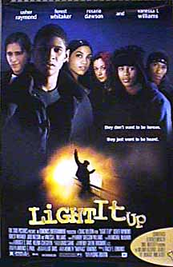

Contents | Features | Reviews | Books | Archives | Store |
 |
|
| Movie Credits | Buy It! |
Light It up
Review by
Cynthia Fuchs
Posted 19 November 1999
|  |
Written and Directed by Craig Bolotin Starring Usher Raymond, Forest Whitaker, Marcello Robinson, Rosario Dawson, Robert Richard, Judd Nelson, Fredro Starr, Sara Gilbert, Clifton Collins Jr., Glynn Turman, Vic Polizos, Vanessa L. Williams, Gaddiel Otero, Frank Dominelli, and Reggie Theus |
"How
many wanna die with me!?" The chorus from Ja Rule's "How Many"
sounds desperate and rebellious, a call for true dog loyalty. As it's performed
in the rapper's currently all-over-TV music video, the chorus takes on a less
choleric trendiness: throwing his hands in the air, Ja Rule stalks a label-logoed
stage, cheered by an enthusiastic crowd of beautiful hiphop kids. Interspersed
with this rowdy ritual are whopping zoom shots, gorgeously lit shots of the
young stars of Light It Up, Usher Raymond, Rosario Dawson, Fredro Starr,
Sarah Gilbert (with brief notations of the adult players, Forest Whitaker and
Vanessa L. Williams in a cool new short haircut). "How Many" sells the
soundtrack, the soundtrack sells the movie, and the cash flows.
Such
is the business of crossover advertising and consuming. It's about mixing and
matching venues (say, music videos and movies, TV and magazine fashion spreads),
talent (musicians, actors, designers, singers), and target audiences. The most
successful crossover campaigns make the pitch for "universality,"
which means that, even if you don't imagine you'd be interested in a topic (high
school movies) or star (Usher or Ja Rule or Rosario Dawson), you're told that
there are good reasons for you to buy the product.
In
the case of Light It Up, crossing-over occurs on several levels, not the
least significant being the use of a famously hard rapper like Ja Rule to pitch
a movie that argues against kids being hard. The
slip-the-yoke-and-change-the-joke crossing over here comes in the soundtrack's
brilliant marketing moves of the soundtrack crossover But it's a smart marketing
move to use Ja Rule's hit single, as well as Master P's title track, AZ and
Beanie Siegel's "That's Real," Amil and Sole's "First One
Hit," DMX's "Catz Don't Know," and Blaze and Fredro's
"Ghetto is a Battlefield." (Not to mention the
zinger-crossing-over-the-moon track, 'N Synch's "Only in Heaven's
Eyes," which is intelligently left out of the movie proper, playing over
the closing credits: this way, it sells the cd, but won't interfere with the
film's staunch hiphop flavor.)
In
the larger scheme of things, the use of Ja Rule is a crossing over for the
film-and-soundtrack producers, Babyface and wife Tracey Edmonds, better known
for their previous soft R&B work, including producing Soul Food and
distributing Hav Plenty. It looks like they're expanding their repertoire
to the lucrative "youth market." The Edmondses are, of course,
virtuoso entrepreneurs, and it makes sense that their foray into a new
"demographic" would be expertly calculated. Crucially, Light It Up
is most obviously a slick '90s update of The Breakfast Club. The set-up
is hardly subtle: the righteously sullen white 'burban high school students have
mutated into righteously enraged multi-culti urbanites and the situation is an
accidental but inevitably violent school take-over instead of a Saturday
detention. If you have any lingering doubts as to the film's roots, consider
that it stars Judd Nelson, once John Hughes' version of a wannabe hooligan, now
a passionate, honorable English teacher, wanting so much to help his students
but completely unable to do so.
But
if it's easy to see all this, it's less easy to dismiss Light It Up as
merely more of the same. The complications come in the film's
self-understanding: it never pretends to be anything but what it is: a grand
dramatization of high school sadness and rage. Written and directed by Craig
Bolotin (who wrote Black Rain and wrote and directed for Miami Vice),
the movie arrives in theaters at a time that makes it relevant and, perhaps even
more surprising, interesting. For one thing, it actually does update the high
school movie genre, so inexorably defined by the 1980s Hughes Machine (and
brilliantly deconstructed by Heathers in 1987) and so dutifully reprised
by just about every high school movie of the last decade (not so well
deconstructed by Heathers clones like Jawbreaker). This updating
is based in the film's serious attention to contemporary high schoolers'
concerns. Like most high school movies, Light It Up begins with
stereotypes for characters, but by the end, they've been complicated and
contextualized.
Some
of the students' concerns are site-specific, but they're also general enough to
make compelling sense for a range of viewers: the students at Queens' Lincoln
High School are underfunded, understaffed, underappreciated, and underprotected
(despite the standard metal detectors at the main doors). Unlike Wes Craven's
sappy and exemplary-teacher-focused Music of the Heart, this movie takes
the kids' point of view. Granted, given the Edmondses' connections and budget,
this perspective is sort of grit-plus-glam, with production design by Lawrence
G. Paul (Back to the Future and Blade Runner) and cinematography
by Elliot Davis (Out of Sight).
Lush
as it looks, the story remains focused on basic, topical problems, without
resorting to Columbine-derived histrionics: the point here is not to decipher
"bad kids,'' but to indict the school, class, and legal systems that make
life difficult for all the kids. The Lincoln students survive without help from
most adults around them. Most of them get by or get over, and some of them even
imagine getting out. Among these hopefuls is Stephanie (Dawson), an A student
with Ivy League aspirations, and Ziggy Malone (Robert Ri'chard), a graffiti
artist who wants to be the next Basquiat. They're both encouraged to pursue
their dreams by Knowles (Nelson), who also looks out for basketball player
Lester (Usher), currently going through hell because he witnessed his father
being "accidentally" killed by cops, who have offered no apology,
explanation, or legal recompense for the family.
Understandably
on edge, the students are quickly drawn into a no-win showdown with their
principal (Glynn Turman), a beleaguered manager who suspends Knowles for taking
the kids off campus for class (because their classroom is freezing and dripping
icy water from the ceiling). The principal calls for security to back him up,
and the kids suddenly confront a testy, image-anxious ex cop, Officer Dante
Jackson (Whitaker). A struggle ensues, the cop's shot in the leg, and his gun
ends up in Lester's hands. The school shuts down, the kids are left with their
hostage and a request from the police negotiator, Detective Audrey McDonald
(Williams, who also played a difficult role in the Edmondses' Soul Food)
to state their demands. This is a predicament, as they never envisioned that
anyone would ask them what they wanted.
They
need to come up with a plan and a way to work together. They feel under siege (a
point made clear by a clip from Denzel Washington's Under Siege on a
background TV). The beleaguered crew includes Lester, Stephanie, and Ziggy, as
well as a stoner named Rivers (Clifton Collins, Jr.), a loner, Lynn (Gilbert),
and a gangbanger, Rodney (Starr). Brought together inadvertently, they spend the
day pairing off to argue, worry, and talk earnestly about their "issues,''
a la Breakfast Club. That these issues include the need to get the
school's broken windows fixed, lack of textbooks, Lester's dad's murder, and
Lynn's unwanted pregnancy (just confirmed that morning in the girls' room, where
she was viciously dissed by chic classmates) indicates just how far from the
Hughes Universe the kids have traveled.
Their
exchanges range from hackneyed (Rodney wants to bust a cap in Jackson's or
Lester's ass) to upsetting (Ziggy's been cruelly abused, Jackson's got his own
life woes), with predictable romancing between Lester and Stephanie in the mix
(though this is handled with some admirable tact). Lessons are learned, tensions
wind up and down, but the situation can't come out well. Perhaps the most
auspicious lesson has to do with tolerance, but it's hard to dismiss loyalty:
the kids have to stick together because they've been abandoned by administrators
and cops who don't get it.
Which returns us to Ja Rule: ostentatious and inflammatory as his posturing might appear to adults, he speaks truth for his young audience: loyalty and commitment are key to the struggle. What the Edmondses add is a marketing strategy: while it's unlikely that Light It Up will actually be heard by the folks who need to hear it, but you can appreciate its efforts to solicit that age group with name actors like Whitaker and Williams and high production values. If only kids hear it -- well, at least now they have a Breakfast Club of their own.
Contents | Features | Reviews
| Books | Archives | Store
Copyright © 1999 by Nitrate Productions, Inc. All
Rights Reserved.